@Tasnimnews_Fa
📝 原文: توسل مردم مردم زاهدان به امام رضا (علیهالسلام)؛ با مدد امام رضای غریب ـ نصر من الله و فتح قریب
🇨🇳 译文: 扎黑丹人民向伊玛目礼萨（愿他安息）发出的呼吁；在伊玛目礼萨·加里卜 - 纳斯尔·马纳拉和法塔赫·加里卜的帮助下

🕒 2026-04-16T19:05:14.000Z


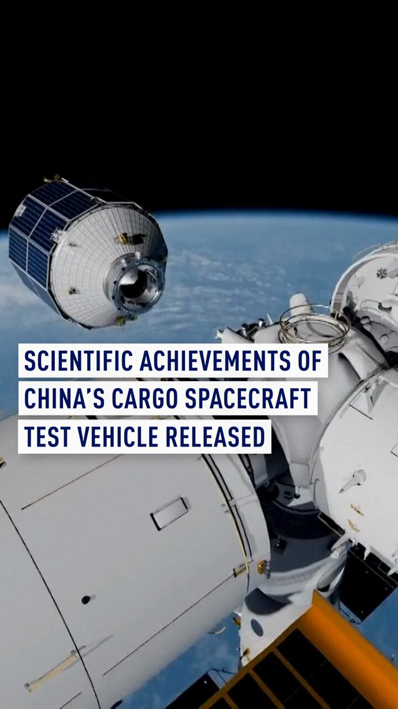
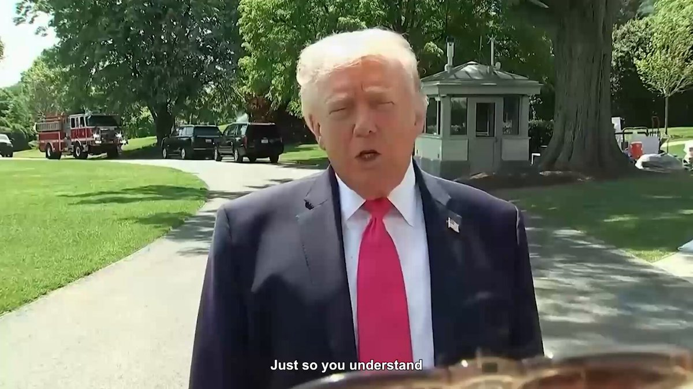

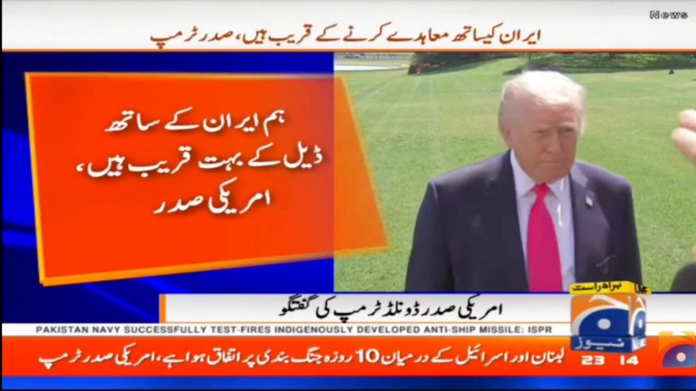
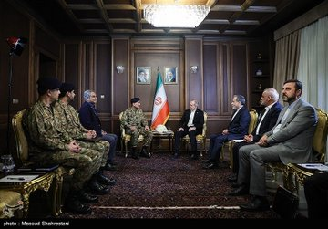
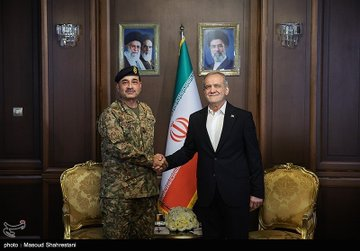
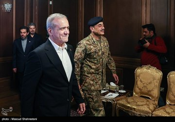
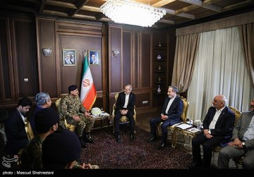

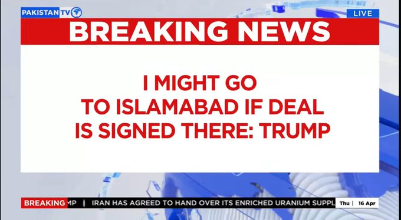
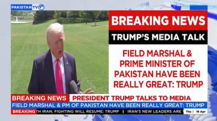
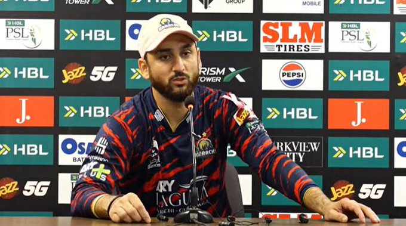


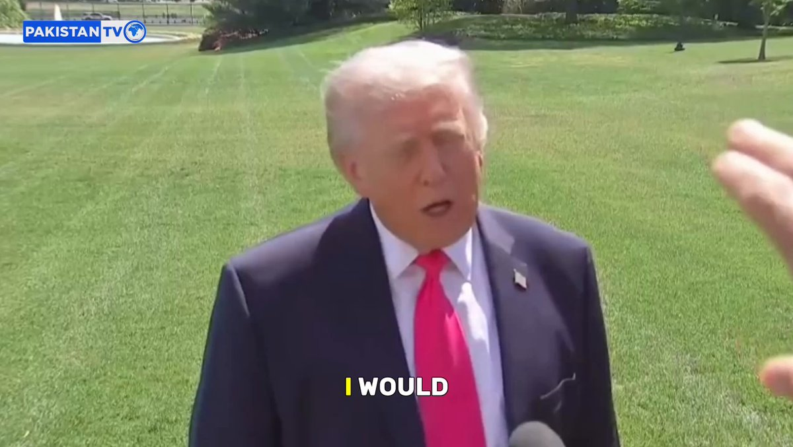


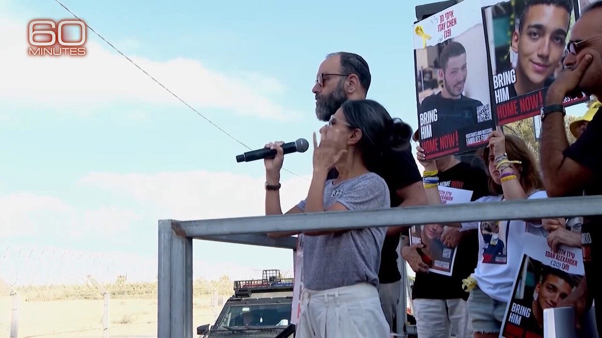


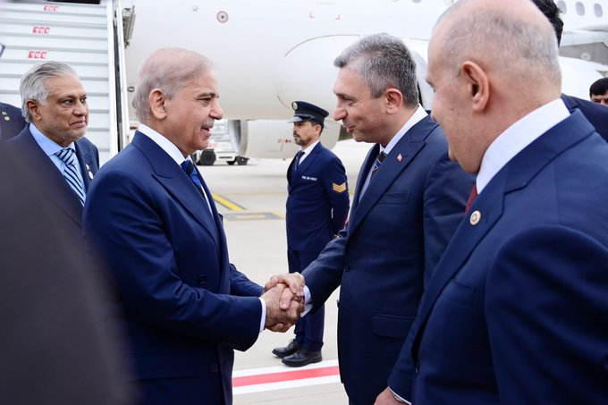
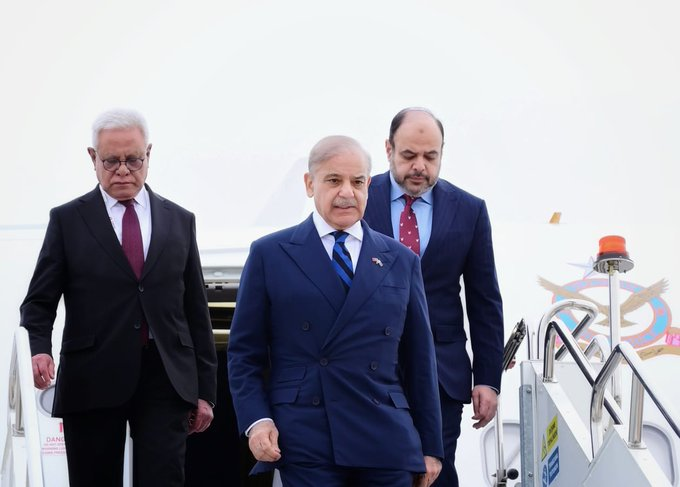
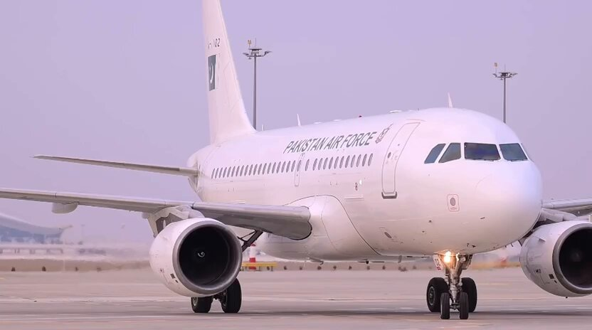